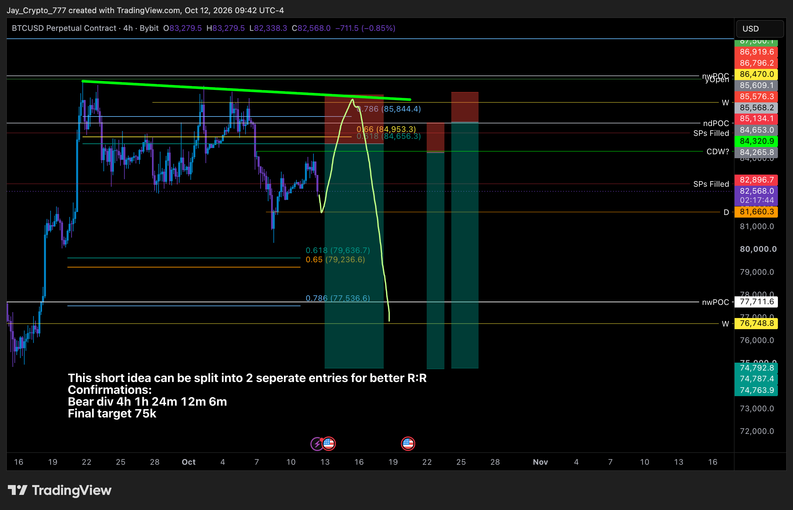
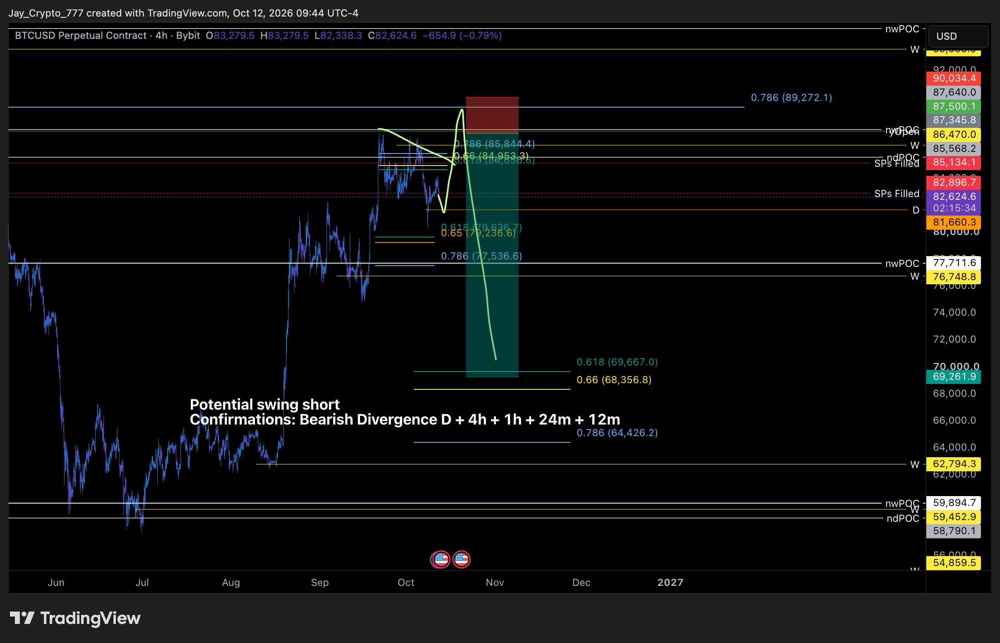
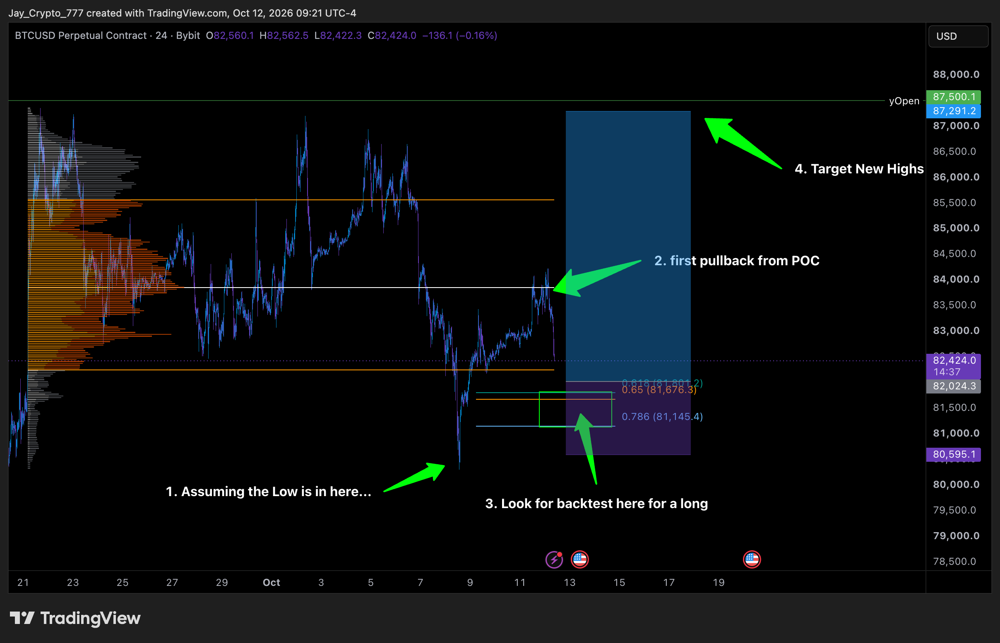

Trades VIP do Cobra. A cor da bolinha no nome do canal mostra o estado do trade.
Executou ontem às 20h. Hoje às 4h26–4h35 o Cobra realizou 10% do lucro e subiu o stop para a entrada. Pela Binance spot o BTC chegou a 81.034 às 21h50 de ontem, abaixo do stop antigo (81.114); o Cobra seguiu posicionado, talvez porque a corretora dele não marcou essa mínima. Está a favor do curto prazo, mas contra o 12h e o 1D (divergência de baixa confirmada). Com o stop na entrada, o risco ficou zerado.
Post novo hoje às 4h38: "a ordem limite foi front-runada". A mínima de ontem foi 101,69, só 0,32 acima da entrada, então a ordem não executou. Long contra o 12h e o 1D (divergência de baixa confirmada).
Sem mudança. Mínima de ontem 2.409. Long contra o 12h e o 1D.
Sem mudança desde 04/10. A favor do 12h e do 1D, mas longe.
Sem mudança desde 21/09. A favor do 12h e do 1D; o 4h do ETH estava com divergência de alta ontem.
Ordem antiga (13/08), sem atualização.
Sem atualização desde 17/09.
O canal do trade está vazio. No vip-cobra-updates ele comemorou alta de 64% desde a compra, realizou parte, mira 1,6 e perguntou hoje às 4h29 se o pessoal aumentou a posição. Nenhum nível de entrada ou stop.
Sem mudança desde 05/09. Preço muito abaixo da entrada.
Sem mudança desde 25/09.
BTC perpétuo na Bybit. Ele quase não escreve números: valores com ≈ foram lidos no gráfico. Nada novo postado hoje até 12h12.
Ontem às 20h08 ele entrou no long do golden pocket; às 21h15 disse que teve uma pequena perda. Às 21h35 tentou outro long no 0,786 com stop abaixo da mínima e às 22h foi estopado por um pavio, logo antes do repique. Os dois longs fecharam no prejuízo, com stops mais curtos que o ≈80.600 do gráfico.
Só vale se o BTC perder 80.300 e fizer divergência de alta no 1h e menores, entrando na retomada. A mínima foi 81.034, então não acionou. Long contra o 12h e o 1D.
Lendo melhor o gráfico: 1ª entrada ≈84.300 (stop ≈85.100–85.600) e 2ª entrada ≈85.570 (stop ≈86.900), alvo final ≈75.000. A máxima de hoje foi 84.168, a menos de 0,2% da entrada. É o trade mais perto e está a favor do 12h e do 1D, como os shorts do nosso relatório (rejeição de 83,1–84,4 mil com confirmação no 1h).
Confirmação pedida: divergência de baixa no diário, 4h, 1h e menores. A favor do tempo gráfico maior.
O alvo ≈81.660 foi atingido ontem entre 20h e 21h, antes da entrada. Depois o preço passou 83.317 (0h30) e o stop 83.616 (2h10). Ele não comentou, mas considero o setup vencido.

Jayson, 12/10 10h39: short 4h em duas entradas (≈84.300 e ≈85.570), alvo final ≈75.000.

Jayson, 12/10 10h44: short swing na zona 84.950–85.840, alvos 69.667 / 68.357 / 64.426.

Jayson, 12/10 10h21: long principal no golden pocket (encerrado com pequena perda à noite).